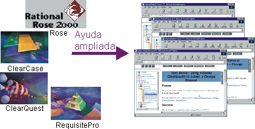

| Orientación del proceso |
 |
|
 Los usuarios de las herramientas de Rational tienen acceso a una ayuda sensible al contexto que enlaza con Rational Unified Process. La ayuda sensible al contexto de las herramientas de Rational le ayuda a encontrar las páginas de Rational Unified Process (RUP) que son relevantes a la tarea en la que se está trabajando. Cuando trabaja con las herramientas de Rational, el recurso de "ayuda ampliada" proporciona información adicional sobre la tarea que se está realizando. El recurso de ayuda ampliada ofrece enlaces a temas sobre RUP, desde orientación en los conceptos clave hasta actividades del proceso aplicables, directrices de trabajo y otra información. La ayuda ampliada se puede configurar, lo que permite a los clientes de Rational añadir sus propios enlaces a información del proceso, en intranets de la empresa o en Internet. La documentación de Rational Suite proporciona información de personalización. Puede acceder a la ayuda ampliada desde el menú Ayuda de cada herramienta de Rational. |
© Copyright IBM Corp. 1987, 2006. Reservados todos los derechos. |